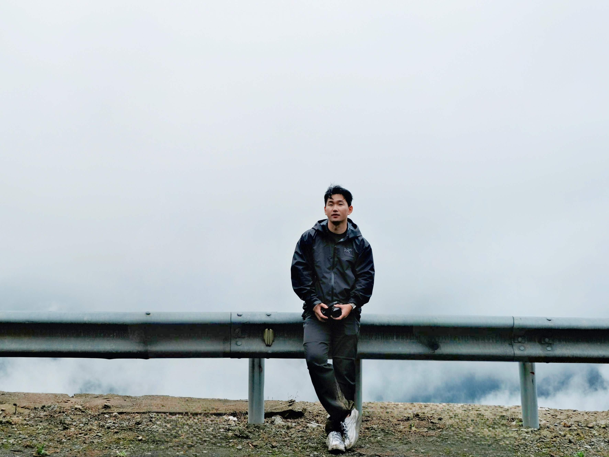

Taizijian · 2026
Into
the Mist
A photographic journey through mountain fogProject 01
In the fog, light makes
the road briefly visible.
A passage through the dense mist of Taizijian. Night, headlights and human figures overlap; after daybreak, the road continues to disappear into the mountain forest.



About
Eric
Independent photographer drawn to mountain weather, unfamiliar roads and the quiet tension between people and landscape.